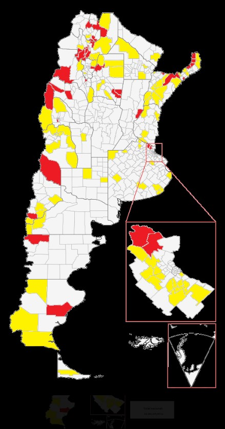

Entre el extractivismo y la soberanía: el desafío de los gobiernos locales frente al Súper RIGI.
El debate sobre el nuevo régimen de incentivos para grandes inversiones ha escalado a nivel nacional, pero su impacto se siente con especial intensidad en las provincias. Con la irrupción del llamado "Súper RIGI", los gobiernos locales se enfrentan a un dilema de hierro: cómo integrar la inversión extranjera masiva sin sacrificar la potestad sobre el territorio y la autonomía fiscal.
La arquitectura del Súper RIGI —que eleva el umbral a los 1.000 millones de dólares— busca crear "islas" de excepción jurídica. Desde una perspectiva de gestión, la preocupación no radica únicamente en la llegada de capitales, sino en el vaciamiento de las competencias municipales. En el día a día administrativo, donde se resuelven expedientes y se planifica el desarrollo urbano, la adhesión a este régimen se siente como una desposesión. Al resignar capacidades sobre Ingresos Brutos o tasas locales, el municipio no solo pierde recaudación: pierde la herramienta más potente para regular el uso del suelo.
La teoría del RIGI se choca frontalmente con la realidad geográfica de San Juan. Departamentos como Calingasta y 25 de Mayo ya han superado los límites de extranjerización que la Ley 26.737 intentó imponer años atrás para proteger la soberanía rural. ¿Qué capacidad de planificación le queda a un municipio donde una porción significativa del suelo ya responde a intereses corporativos globales? El Súper RIGI no llega a un territorio virgen; llega a un territorio ya tensionado, donde la capacidad de veto local es, en la práctica, inexistente.
La pregunta que la dirigencia provincial debe formularse es si estamos preparados para una gobernanza que priorice acuerdos nacionales por sobre la planificación territorial de proximidad. La inversión es necesaria, pero el desarrollo es un concepto integral que incluye la sostenibilidad social. Un modelo de país que no contempla la autonomía de sus gobiernos locales corre el riesgo de convertir al territorio en una hoja de cálculo para empresas.
Es hora de recuperar la centralidad de la gestión política: el desarrollo no ocurre sobre la tierra, ocurre con la comunidad que la habita.
